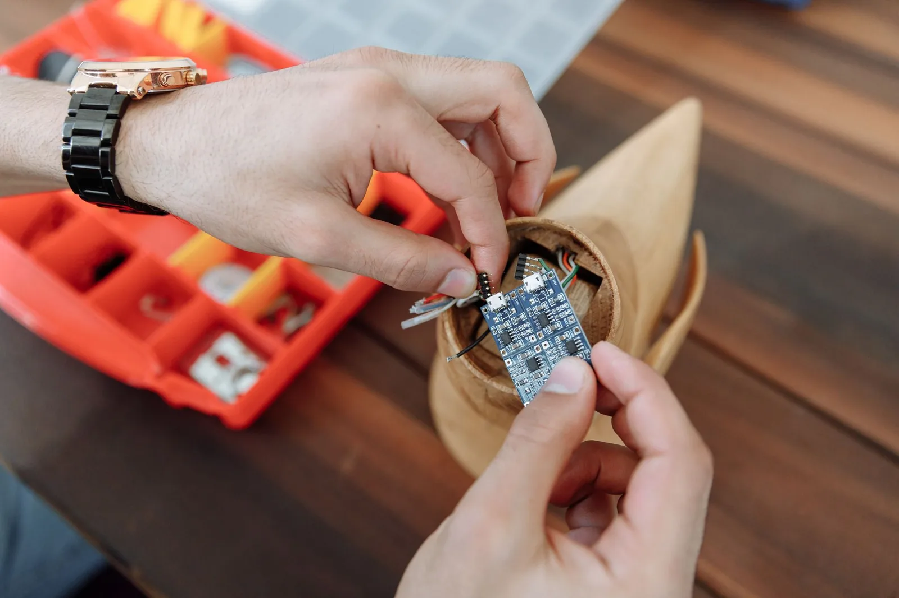

Software development photography
These editorial photographs illustrate the work of writing, reviewing and running software. The opening sequence uses resized WebP editions, with a wider crop for the server photograph.
All five photographs are used under the Pexels License.
Development workspace
Photograph by Mikhail Nilov.
Original photograph on PexelsCode review
Photograph by Christina Morillo.
Original photograph on PexelsSource code
Photograph by Markus Spiske.
Original photograph on PexelsServer operations
Photograph by Christina Morillo.
Original photograph on Pexels
Electronics workbench
Photograph by Thirdman.
Original photograph on Pexels